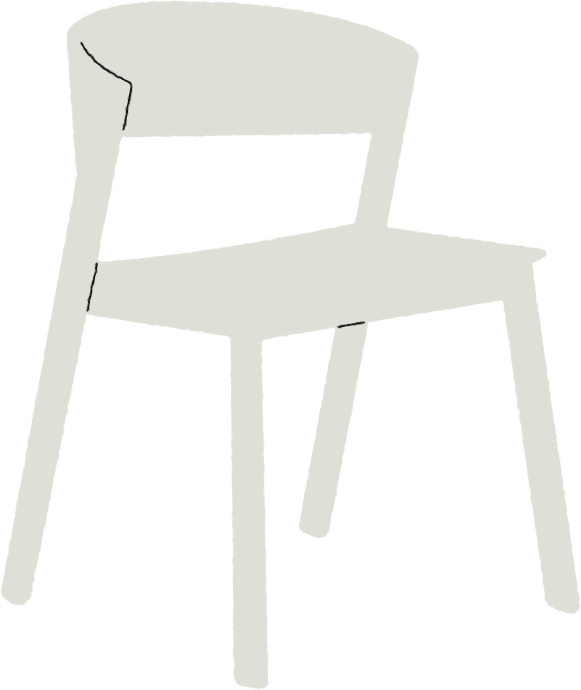
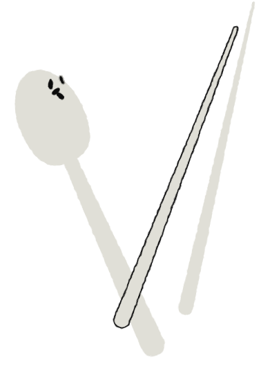
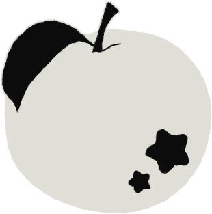
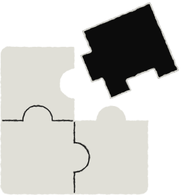
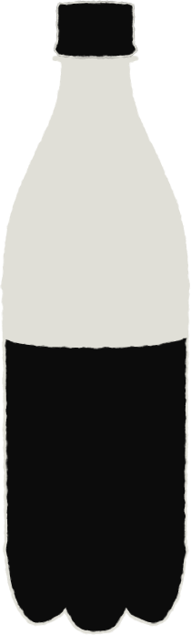

UX/UI
WEB/
INTERACTION
DESIGNER
GRAPHIC
&
BRANDING
©2026
RESEARCH
thinking
Clarity
then craft
I build designs
that last
My Design Philosophy
나는 보이지 않던 것을 드러내는 시선을
가진 디자이너가 되고자 한다.
익숙함 속에서 쉽게 지나쳐지는 요소들에 주목하고,
그 안에서 의미와 가치를 발견하는 과정에 집중한다.
사소해 보일 수 있는 것들 역시 각자의 강점을 가지고 있으며,
이를 적절한 방식으로 드러낼 때 새로운 가능성이 만들어진다고 믿는다.
중요한 것을 더 중요하게 만드는 것, 그것이 내가 지향하는 디자인이다.
Project





01
02
03
04
05
06